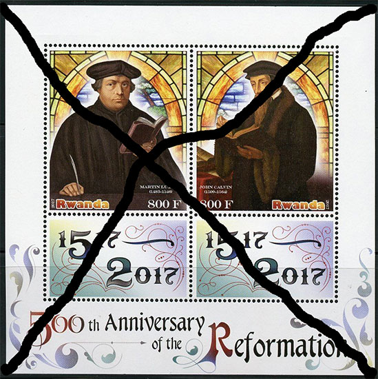
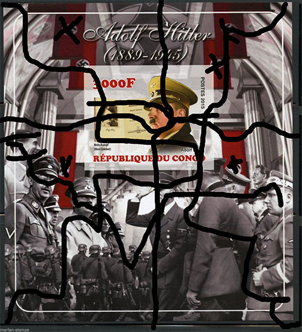
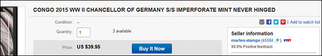
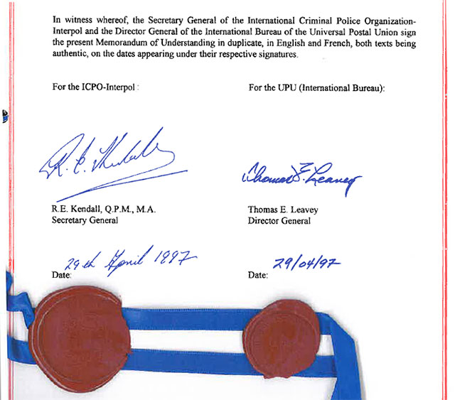

INTERPOL - A Long Overdue Measure
Francaise
INTERPOL - A Long Overdue Measure
for fighting the illegal stamp issues
Victor MANTA, PWO
The WNS (WADP Numbering System) was created by the World Association for the Development of Philately (WADP) and implemented by the Universal Postal Union (UPU). The WNS website was launched on January 1, 2002.
This numbering system was supposed to become the foundation for an online database of all stamps issued worldwide lawfully, and its goal was to fight against the large-scale manufacturing and sale of illegal stamps. This goal has not been reached even now, after 15 years of its existence and after big investments. For more please read this article.
However, in 2017 the UPU introduced more consistently a new category of stamps, by marking the years when a country didn't issue stamps at all. The best example can be found in the List of participating agencies, published in the WNS, by looking at Rwanda.
We can see that between 2004 - 2017 this country issued only nine stamps and all of them only in 2010. This is confirmed by the UPU IB Circular No. 19 of the 30th of January 2017, that denounces to the UPU some illegal RWANDA stamps, and where we can read as follows: “The National Post Office informs its partners that its most recent postage stamps were issued on 15 November 2010 ('Mountain Gorillas' and 'Art and Culture of Rwanda' series). All issues bearing a later date are illegal and should be treated as such.”
“No stamps issued”
Therefore, if you are tempted to buy a souvenir sheet (S/S) like the one shown below, you know for sure that it is an illegal one because it was issued in the name of Rwanda in a year when the Postal Administration of this country didn't issue any stamp. Unfortunately, the “Awaiting stamps for registration” that appears so often and for so many countries in the WNS doesn't help stamp collectors worldwide to identify the illegal stamps because nobody knows what is WNS waiting for.

Illegal stamps from Rwanda
Let us remember that this S/S is sold by a seller from New York, a company that is known for a long time as a dealer of such kind of stamps.
Now how do you like the souvenir sheet displayed below? It is offered, also on eBay, by the same dealer and it is an homage to one of the most hated men on the planet, the former Chancellor of Nazi Germany, the notorious criminal Adolf Hitler and his companions.

Illegal S/S from Congo Republic
The S/S was allegedly issued in the name of the Congo Republic in 2015. A quick investigation of the WNS database shows that in 2015 this country registered only one (sport) stamp and that WNS is not expecting to receive further registrations.

eBay offer for the above S/S (excerpt)
We can therefore infer that Hitler and its companions S/S sold on eBay represent an illegal stamp issue.
Efficient Measures Are Long Overdue
A good question is what should be done after so many violations by the unknown producers of such illegal stamps and of many known dealers who obviously work with them or their associates? After millions of dollars spent on the largely inefficient and forever incomplete WNS and totally incomplete, and badly documented UPU IB Circulars. Note that only two of them were published by the UPU in 2017, as compared to not less than fifteen Circulars published in 2001.
What comes in mind, as a last resort solution, is the MEMORANDUM OF CO-OPERATION BETWEEN THE INTERNATIONAL CRIMINAL POLICE ORGANIZATION - INTERPOL AND THE UNIVERSAL POSTAL UNION. It was signed on the 29th of April 1997 by the Secretary General of the ICPO-Interpol, R.E. Kendall, Q.P.M., W.A. and the Director General of UPU (International Bureau), Thomas E. Leavey.

ENOUGH IS ENOUGH and for this reason radical measures are long overdue, but it is never too late!
Legal notice
• This is a piece of philatelic journalism. It is protected by the free speech and by the liberty of the press doctrines.
• Some short excerpts or cancelled images are sometimes used for illustration/teaching/criticism/commentary purposes only, to properly inform the worldwide readers.
• The fair use doctrine is strictly observed. Each excerpt is properly attributed and respects the rights of the copyright owners.
• We will immediately correct any piece of information that will be proved false.Links to related articles published on this site:
- WNS Circulars are not reliable
- WADP, WNS and the Illegal Postal Stamps. Balance Sheet Ten Years Later
- What is WNS Good For?
- No Help from the UPU
- Nigerian Stamp Sentinel
- Ten Lost WNS Years
About the author. Victor Manta is the founder and the current president of the PWO. He is mostly interested in thematic (topical) stamps and in the philately on the Internet. His philatelic sites were multiple awarded in web sites philatelic competitions. He is also a well-known philatelic journalist, who published numerous philatelic articles on the web and in printed magazines.
|